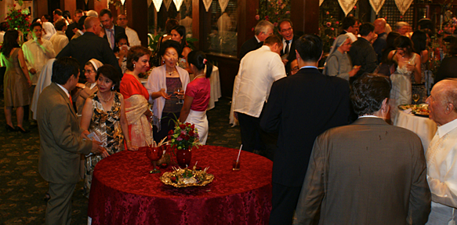

Heritage Restaurant
Barbara's Heritage Restaurant
Plaza San Luis Complex, Intramuros Manila
527-4086 / 527-3893 / 788-3356 / 527-4090
The Restaurant
Step into a place reminiscent of old world elegance. Located along the historical General Luna street in Intramuros, the restaurant evokes the charm and beauty of a bygone era.
Go up the intricately-carved staircase and you will be greeted by magnificent silver-gilted mirrors. Walk into the main hall and experience the luxury of fine dining.

With high ceilings and crystal chandeliers, the setting is a world-apart from your modern-day shopping mall restaurant. Barbara's offers buffet lunches and dinners as well as A la Carte choices.

Menu